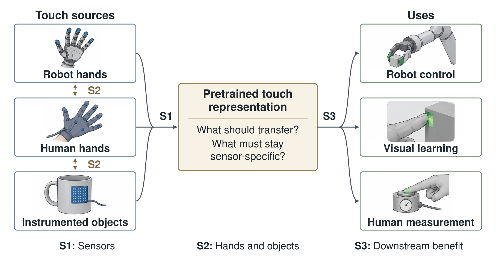

Overview: Tactile Foundation Models (TFM) asks what a pretrained touch representation should preserve so that its benefits persist when the source of touch changes. Touch provides a testbed for a general representation-learning question: which variations should a model remove, and which carry task-relevant information? Recent advances in tactile pretraining, multimodal alignment, and human interaction datasets make this question testable, but comparisons across sensors, embodiments, and uses remain fragmented. The workshop will examine which information should be shared, which contact and calibration information must remain explicit, and when pretraining improves a new task under a fixed target-data budget.
Sessions 1 and 2 examine changes in sensors, hands, and objects; Session 3 tests downstream benefits under these shifts. Five invited talks, contributed talks, tiny-paper lightning presentations, two poster sessions, and a moderated plenary discussion will connect competing approaches to concrete tests. Participants will draft a tactile-data taxonomy and an evaluation protocol specifying source and target splits, adaptation budgets, baselines, and failure criteria.

Across sensors: preserve information, or remove it? Sensors differ in spatial coverage, response dynamics, geometry, and calibration. Making their features indistinguishable may discard a quantity that a downstream task needs. Which objectives support useful invariance, and when should the model condition on sensor identity, geometry, or calibration? We distinguish a new device within a familiar sensing family from an unseen family, such as optical to magnetic or resistive sensing.
Across hands and objects: transfer without identical contacts. A human hand, a robot hand, and an instrumented object observe different parts of an interaction; contact locations, forces, and action distributions may change together. What can transfer without aligned trajectories or matching sensor layouts? Comparisons will state pairing requirements and supervision budgets, and keep recordings of the same interaction within a single split.
Downstream benefit under source shifts. Improved retrieval or prediction alone does not establish better control, visual learning, or measurement of human interaction. Comparisons will independently tune pretrained and target-only models with matched capacity and test-time inputs; adaptation-budget curves will distinguish frozen representations from fine-tuning, with pretraining and target-stage compute reported separately. Physical estimates must be evaluated against calibrated references where those quantities are claimed.
Why now. Sparsh and T3 demonstrate reusable touch representations and transfer across vision-based tactile sensors. SITR combines sensor-invariant features with calibration, while CTSRL uses synthetic cross-sensor data and real multimodal alignment. UniTouch aligns touch with other modalities, and AnyTouch and AnyTouch 2 study unified static and dynamic optical touch representations. PercepSkin extends self-supervised learning to magnetic tactile skins. Human-collected data, intelligent textiles, and tactile gloves provide complementary training signals, and TouchScale further expands the scale of human visual-tactile collection. These results motivate a common account of transfer: evidence across optical sensors alone does not establish transfer across sensing principles and embodiments.
The workshop asks when pretraining remains useful after the source of touch changes. A model trained on fingertip images may later receive magnetic skin measurements or pressure readings from a glove, changing both the observation process and the contacts represented in the data. Each session pairs a core question with a proposed test.
| Session | Focus | Core question | Proposed test |
|---|---|---|---|
| S1 | Sensors | What should be invariant? | Hold out devices and sensing families; compare shared and sensor-conditioned features with explicit calibration. |
| S2 | Hands and objects | What transfers without matched contacts? | Hold out hands or objects; compare paired alignment and unpaired learning. |
| S3 | Downstream benefit | Do task gains persist under these shifts? | Compare pretrained and target-only models under S1/S2 shifts at matched target-data budgets; report gains and negative transfer. |
Roberto Calandra
TU Dresden
Touch representations across sensing principles Session 1
Wenzhen Yuan
University of Illinois Urbana-Champaign
Sensor invariance and calibration Session 1
Jessica Yin
NVIDIA
Human-to-robot tactile skill transfer Session 2
Ruohan Gao
University of Maryland
Multisensory representations and evaluation Session 3
Ding Zhao
Carnegie Mellon University
Evaluating tactile transfer for robust robot learning Session 3
ICLR 2027 · Full day · San Francisco
| 09:00–09:10 | Opening and shared research question |
| Session 1: Across sensors | |
| 09:10–09:45 | Invited talk: Roberto Calandra |
| 09:45–10:20 | Invited talk: Wenzhen Yuan |
| 10:20–10:35 | Coffee break |
| 10:35–10:55 | Two contributed talks |
| 10:55–11:40 | Poster session 1 |
| Session 2: Across hands and objects | |
| 11:40–12:15 | Invited talk: Jessica Yin |
| 12:15–12:35 | Four lightning talks |
| 12:35–13:35 | Lunch and informal exchange |
| Session 3: Downstream benefit | |
| 13:35–14:10 | Invited talk: Ruohan Gao |
| 14:10–14:45 | Invited talk: Ding Zhao |
| 14:45–15:05 | Two contributed talks |
| 15:05–15:20 | Coffee break |
| 15:20–16:10 | Poster session 2 |
| 16:10–17:00 | Plenary discussion: “What should tactile foundation models learn?” — moderated by Mustafa Mukadam |
Each 35-minute invited slot includes ten minutes for questions.
Questions collected after each session feed the closing discussion: ten minutes to compare the three draft tests and surface competing hypotheses, 25 minutes of exchange among invited speakers and attendees, and 15 minutes to identify revisions and record unresolved issues. The moderator will ask when sensor identity, geometry, or calibration improves transfer beyond shared features, and which observation would change each proposed test. Questions can be submitted anonymously.
We invite short papers (up to 4 pages) and tiny papers (up to 2 pages), excluding references,
using the ICLR 2027 format specified in the call. Optional appendices are not required reading.
We welcome new methods, datasets, replications, negative results, and position papers that identify a concrete hypothesis or test.
Tiny papers may report one careful experiment or re-analysis using existing data.
Both tracks are non-archival.
Novel and ongoing work will receive priority for oral presentation; previously published work must add a substantive new result or analysis.
All accepted papers will be presented as posters.
Each session contributes a draft test specification: a source/target split, permitted calibration and adaptation, test-time inputs, a target-only baseline, a metric, and a condition under which transfer fails. These drafts inform two shared resources that make disagreements about representation design experimentally actionable.
Source and target splits, adaptation budgets, baselines, and failure criteria for testing tactile transfer, assembled from the three session drafts.
A companion description of tactile datasets along the following axes:
Drafts will be posted before the workshop. Contributors are invited to add dataset entries and runnable examples using licensed public data. Within four weeks of the workshop, we will publish the revised resources and an attributed discussion report, with a public issue tracker for corrections and follow-up experiments.
TFM builds on established tactile-learning communities: